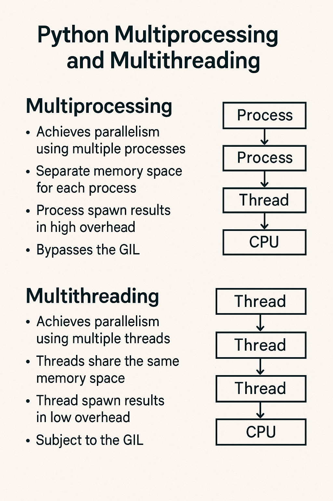

Python Multiprocessing and Multithreading: A Comprehensive Guide

Introduction
Python provides two primary approaches for concurrent execution: multithreading and multiprocessing. Understanding when and how to use each is crucial for writing efficient Python applications.
- Multithreading: Multiple threads within a single process sharing memory space
- Multiprocessing: Multiple separate processes, each with its own memory space
Understanding Concurrency vs Parallelism
Concurrency
Concurrency is about dealing with multiple tasks at once, but not necessarily executing them simultaneously. Tasks may be interleaved or switched between rapidly.
Parallelism
Parallelism is about executing multiple tasks simultaneously, typically on multiple CPU cores.
# Concurrent execution (may not be parallel)
import threading
import time
def task(name):
for i in range(3):
print(f"Task {name}: {i}")
time.sleep(0.1)
# Create threads
t1 = threading.Thread(target=task, args=("A",))
t2 = threading.Thread(target=task, args=("B",))
# Start threads
t1.start()
t2.start()
# Wait for completion
t1.join()
t2.join()The Global Interpreter Lock (GIL)
The GIL is a mutex that protects access to Python objects, preventing multiple threads from executing Python bytecode simultaneously. This has important implications:
GIL Impact
- CPU-bound tasks: Multithreading provides little benefit due to GIL
- I/O-bound tasks: Multithreading can be effective as GIL is released during I/O operations
- Multiprocessing: Bypasses GIL limitations by using separate processes
When GIL is Released
- File I/O operations
- Network I/O operations
- Image processing (PIL/Pillow)
- NumPy operations
- Time.sleep() calls
Multithreading with threading Module
Basic Thread Creation
import threading
import time
# Method 1: Using Thread class directly
def worker_function(name, delay):
for i in range(5):
print(f"Worker {name}: {i}")
time.sleep(delay)
# Create and start threads
thread1 = threading.Thread(target=worker_function, args=("A", 0.5))
thread2 = threading.Thread(target=worker_function, args=("B", 0.3))
thread1.start()
thread2.start()
thread1.join()
thread2.join()Thread Subclassing
import threading
import time
class WorkerThread(threading.Thread):
def __init__(self, name, delay):
super().__init__()
self.name = name
self.delay = delay
def run(self):
for i in range(5):
print(f"Worker {self.name}: {i}")
time.sleep(self.delay)
# Create and start threads
worker1 = WorkerThread("A", 0.5)
worker2 = WorkerThread("B", 0.3)
worker1.start()
worker2.start()
worker1.join()
worker2.join()Thread Pool Executor
from concurrent.futures import ThreadPoolExecutor, as_completed
import time
def task(name, duration):
print(f"Starting task {name}")
time.sleep(duration)
return f"Task {name} completed"
# Using ThreadPoolExecutor
with ThreadPoolExecutor(max_workers=3) as executor:
# Submit tasks
futures = [
executor.submit(task, "A", 2),
executor.submit(task, "B", 1),
executor.submit(task, "C", 3)
]
# Collect results as they complete
for future in as_completed(futures):
result = future.result()
print(result)Thread-Safe Operations
import threading
import time
class ThreadSafeCounter:
def __init__(self):
self.value = 0
self.lock = threading.Lock()
def increment(self):
with self.lock:
temp = self.value
time.sleep(0.001) # Simulate processing
self.value = temp + 1
def get_value(self):
with self.lock:
return self.value
# Demonstrate thread safety
counter = ThreadSafeCounter()
def worker():
for _ in range(100):
counter.increment()
threads = []
for _ in range(10):
t = threading.Thread(target=worker)
threads.append(t)
t.start()
for t in threads:
t.join()
print(f"Final counter value: {counter.get_value()}")Multiprocessing with multiprocessing Module
Basic Process Creation
import multiprocessing
import time
import os
def worker_function(name, delay):
process_id = os.getpid()
for i in range(5):
print(f"Worker {name} (PID: {process_id}): {i}")
time.sleep(delay)
if __name__ == "__main__":
# Create and start processes
process1 = multiprocessing.Process(target=worker_function, args=("A", 0.5))
process2 = multiprocessing.Process(target=worker_function, args=("B", 0.3))
process1.start()
process2.start()
process1.join()
process2.join()Process Pool
import multiprocessing
import time
def compute_square(n):
"""CPU-intensive task"""
return n * n
def compute_with_delay(n):
"""Simulate processing time"""
time.sleep(0.1)
return n * n
if __name__ == "__main__":
numbers = list(range(1, 11))
# Sequential execution
start_time = time.time()
sequential_results = [compute_with_delay(n) for n in numbers]
sequential_time = time.time() - start_time
# Parallel execution
start_time = time.time()
with multiprocessing.Pool(processes=4) as pool:
parallel_results = pool.map(compute_with_delay, numbers)
parallel_time = time.time() - start_time
print(f"Sequential time: {sequential_time:.2f} seconds")
print(f"Parallel time: {parallel_time:.2f} seconds")
print(f"Speedup: {sequential_time/parallel_time:.2f}x")Process Pool Executor
from concurrent.futures import ProcessPoolExecutor, as_completed
import time
def cpu_intensive_task(n):
"""Simulate CPU-intensive computation"""
total = 0
for i in range(n * 1000000):
total += i
return total
if __name__ == "__main__":
tasks = [100, 200, 300, 400, 500]
with ProcessPoolExecutor(max_workers=4) as executor:
# Submit all tasks
futures = [executor.submit(cpu_intensive_task, task) for task in tasks]
# Collect results
for i, future in enumerate(as_completed(futures)):
result = future.result()
print(f"Task {i+1} completed with result: {result}")Communication Between Processes/Threads
Queues
import multiprocessing
import threading
import time
# Process Queue
def producer(queue, items):
for item in items:
queue.put(item)
print(f"Produced: {item}")
time.sleep(0.1)
queue.put(None) # Sentinel value
def consumer(queue):
while True:
item = queue.get()
if item is None:
break
print(f"Consumed: {item}")
time.sleep(0.2)
if __name__ == "__main__":
# Process communication
process_queue = multiprocessing.Queue()
items = ['item1', 'item2', 'item3', 'item4']
producer_process = multiprocessing.Process(target=producer, args=(process_queue, items))
consumer_process = multiprocessing.Process(target=consumer, args=(process_queue,))
producer_process.start()
consumer_process.start()
producer_process.join()
consumer_process.join()Pipes
import multiprocessing
import time
def sender(conn, messages):
for msg in messages:
conn.send(msg)
print(f"Sent: {msg}")
time.sleep(0.1)
conn.close()
def receiver(conn):
while True:
try:
msg = conn.recv()
print(f"Received: {msg}")
except EOFError:
break
if __name__ == "__main__":
parent_conn, child_conn = multiprocessing.Pipe()
messages = ['Hello', 'World', 'From', 'Process']
sender_process = multiprocessing.Process(target=sender, args=(child_conn, messages))
receiver_process = multiprocessing.Process(target=receiver, args=(parent_conn,))
sender_process.start()
receiver_process.start()
sender_process.join()
receiver_process.join()Synchronization Primitives
Locks
import threading
import time
# Thread Lock
shared_resource = 0
lock = threading.Lock()
def increment_with_lock():
global shared_resource
for _ in range(100000):
with lock:
shared_resource += 1
def increment_without_lock():
global shared_resource
for _ in range(100000):
shared_resource += 1
# Demonstrate race condition
shared_resource = 0
threads = []
for _ in range(5):
t = threading.Thread(target=increment_without_lock)
threads.append(t)
t.start()
for t in threads:
t.join()
print(f"Without lock: {shared_resource}")
# With lock
shared_resource = 0
threads = []
for _ in range(5):
t = threading.Thread(target=increment_with_lock)
threads.append(t)
t.start()
for t in threads:
t.join()
print(f"With lock: {shared_resource}")Semaphores
import threading
import time
# Semaphore to limit concurrent access
semaphore = threading.Semaphore(2) # Allow 2 concurrent accesses
def access_resource(worker_id):
with semaphore:
print(f"Worker {worker_id} accessing resource")
time.sleep(2) # Simulate work
print(f"Worker {worker_id} finished")
threads = []
for i in range(5):
t = threading.Thread(target=access_resource, args=(i,))
threads.append(t)
t.start()
for t in threads:
t.join()Condition Variables
import threading
import time
import random
# Producer-Consumer with Condition
condition = threading.Condition()
buffer = []
MAX_SIZE = 5
def producer():
for i in range(10):
with condition:
while len(buffer) >= MAX_SIZE:
print("Buffer full, producer waiting...")
condition.wait()
item = f"item_{i}"
buffer.append(item)
print(f"Produced: {item}")
condition.notify_all()
time.sleep(random.uniform(0.1, 0.5))
def consumer(consumer_id):
for _ in range(5):
with condition:
while not buffer:
print(f"Consumer {consumer_id} waiting...")
condition.wait()
item = buffer.pop(0)
print(f"Consumer {consumer_id} consumed: {item}")
condition.notify_all()
time.sleep(random.uniform(0.1, 0.5))
# Start producer and consumers
producer_thread = threading.Thread(target=producer)
consumer_threads = [threading.Thread(target=consumer, args=(i,)) for i in range(2)]
producer_thread.start()
for t in consumer_threads:
t.start()
producer_thread.join()
for t in consumer_threads:
t.join()Performance Comparison
I/O-Bound Tasks
import time
import requests
import threading
import multiprocessing
from concurrent.futures import ThreadPoolExecutor, ProcessPoolExecutor
def fetch_url(url):
"""Simulate I/O-bound task"""
try:
response = requests.get(url, timeout=5)
return f"Status: {response.status_code}"
except:
return "Error"
def time_execution(func, *args, **kwargs):
start = time.time()
result = func(*args, **kwargs)
end = time.time()
return result, end - start
# Sequential execution
def sequential_fetch(urls):
return [fetch_url(url) for url in urls]
# Threaded execution
def threaded_fetch(urls):
with ThreadPoolExecutor(max_workers=10) as executor:
return list(executor.map(fetch_url, urls))
# Process execution
def process_fetch(urls):
with ProcessPoolExecutor(max_workers=10) as executor:
return list(executor.map(fetch_url, urls))
if __name__ == "__main__":
urls = ['https://httpbin.org/delay/1'] * 10
# Compare performance
_, seq_time = time_execution(sequential_fetch, urls)
_, thread_time = time_execution(threaded_fetch, urls)
_, process_time = time_execution(process_fetch, urls)
print(f"Sequential: {seq_time:.2f}s")
print(f"Threading: {thread_time:.2f}s")
print(f"Multiprocessing: {process_time:.2f}s")CPU-Bound Tasks
import time
import multiprocessing
from concurrent.futures import ThreadPoolExecutor, ProcessPoolExecutor
def cpu_bound_task(n):
"""CPU-intensive computation"""
total = 0
for i in range(n):
total += i ** 2
return total
def compare_performance():
numbers = [1000000] * 8
# Sequential
start = time.time()
sequential_results = [cpu_bound_task(n) for n in numbers]
sequential_time = time.time() - start
# Threading
start = time.time()
with ThreadPoolExecutor(max_workers=8) as executor:
thread_results = list(executor.map(cpu_bound_task, numbers))
thread_time = time.time() - start
# Multiprocessing
start = time.time()
with ProcessPoolExecutor(max_workers=8) as executor:
process_results = list(executor.map(cpu_bound_task, numbers))
process_time = time.time() - start
print(f"CPU-bound task comparison:")
print(f"Sequential: {sequential_time:.2f}s")
print(f"Threading: {thread_time:.2f}s")
print(f"Multiprocessing: {process_time:.2f}s")
print(f"Process speedup: {sequential_time/process_time:.2f}x")
if __name__ == "__main__":
compare_performance()Best Practices
1. Choose the Right Approach
# For I/O-bound tasks: Use threading
import threading
from concurrent.futures import ThreadPoolExecutor
def io_bound_work():
# File operations, network requests, database queries
pass
# For CPU-bound tasks: Use multiprocessing
import multiprocessing
from concurrent.futures import ProcessPoolExecutor
def cpu_bound_work():
# Mathematical computations, image processing, data analysis
pass2. Resource Management
import multiprocessing
import threading
from contextlib import contextmanager
@contextmanager
def managed_thread_pool(max_workers):
with ThreadPoolExecutor(max_workers=max_workers) as executor:
yield executor
@contextmanager
def managed_process_pool(max_workers):
with ProcessPoolExecutor(max_workers=max_workers) as executor:
yield executor
# Usage
with managed_thread_pool(4) as executor:
futures = [executor.submit(some_function, arg) for arg in args]
results = [future.result() for future in futures]3. Error Handling
import threading
import multiprocessing
import logging
from concurrent.futures import ThreadPoolExecutor, as_completed
def safe_worker(task_id):
try:
# Your work here
result = f"Task {task_id} completed"
return result
except Exception as e:
logging.error(f"Task {task_id} failed: {e}")
return None
def execute_with_error_handling():
with ThreadPoolExecutor(max_workers=4) as executor:
futures = [executor.submit(safe_worker, i) for i in range(10)]
for future in as_completed(futures):
try:
result = future.result()
if result:
print(result)
except Exception as e:
logging.error(f"Future failed: {e}")4. Graceful Shutdown
import threading
import time
import signal
import sys
class GracefulWorker:
def __init__(self):
self.shutdown_event = threading.Event()
self.threads = []
def worker(self, worker_id):
while not self.shutdown_event.is_set():
print(f"Worker {worker_id} working...")
time.sleep(1)
print(f"Worker {worker_id} shutting down")
def start_workers(self, num_workers):
for i in range(num_workers):
t = threading.Thread(target=self.worker, args=(i,))
t.start()
self.threads.append(t)
def shutdown(self):
print("Initiating graceful shutdown...")
self.shutdown_event.set()
for t in self.threads:
t.join()
print("All workers shut down")
# Usage
worker_manager = GracefulWorker()
def signal_handler(signum, frame):
worker_manager.shutdown()
sys.exit(0)
signal.signal(signal.SIGINT, signal_handler)
worker_manager.start_workers(3)
# Keep main thread alive
try:
while True:
time.sleep(1)
except KeyboardInterrupt:
worker_manager.shutdown()Advanced Topics
1. Custom Thread Pool
import threading
import queue
import time
class SimpleThreadPool:
def __init__(self, num_workers):
self.task_queue = queue.Queue()
self.workers = []
self.shutdown = False
for _ in range(num_workers):
worker = threading.Thread(target=self._worker)
worker.start()
self.workers.append(worker)
def _worker(self):
while not self.shutdown:
try:
task, args, kwargs = self.task_queue.get(timeout=1)
if task is None:
break
task(*args, **kwargs)
self.task_queue.task_done()
except queue.Empty:
continue
def submit(self, task, *args, **kwargs):
self.task_queue.put((task, args, kwargs))
def close(self):
self.shutdown = True
for _ in self.workers:
self.task_queue.put((None, (), {}))
for worker in self.workers:
worker.join()
# Usage
def sample_task(name, delay):
print(f"Task {name} starting")
time.sleep(delay)
print(f"Task {name} completed")
pool = SimpleThreadPool(3)
for i in range(5):
pool.submit(sample_task, f"Task-{i}", 1)
time.sleep(6)
pool.close()2. Async-style with Threading
import threading
import time
from concurrent.futures import ThreadPoolExecutor
class AsyncResult:
def __init__(self, future):
self.future = future
def get(self, timeout=None):
return self.future.result(timeout=timeout)
def is_ready(self):
return self.future.done()
class AsyncExecutor:
def __init__(self, max_workers=4):
self.executor = ThreadPoolExecutor(max_workers=max_workers)
def submit(self, func, *args, **kwargs):
future = self.executor.submit(func, *args, **kwargs)
return AsyncResult(future)
def map(self, func, iterable):
return [self.submit(func, item) for item in iterable]
def shutdown(self):
self.executor.shutdown(wait=True)
# Usage
def long_running_task(n):
time.sleep(n)
return n * n
async_executor = AsyncExecutor(max_workers=3)
# Submit tasks
results = []
for i in range(1, 4):
result = async_executor.submit(long_running_task, i)
results.append(result)
# Wait for results
for i, result in enumerate(results):
print(f"Task {i+1} result: {result.get()}")
async_executor.shutdown()3. Process Pool with Initialization
import multiprocessing
import time
# Global variable for each process
process_data = None
def init_process(shared_data):
global process_data
process_data = shared_data
print(f"Process {multiprocessing.current_process().name} initialized")
def worker_with_init(item):
global process_data
# Use the initialized data
result = item * process_data
return result
if __name__ == "__main__":
shared_value = 10
with multiprocessing.Pool(
processes=4,
initializer=init_process,
initargs=(shared_value,)
) as pool:
items = [1, 2, 3, 4, 5]
results = pool.map(worker_with_init, items)
print(f"Results: {results}")Real-World Examples
1. Web Scraper
import requests
import threading
import time
from concurrent.futures import ThreadPoolExecutor, as_completed
from urllib.parse import urljoin, urlparse
import queue
class WebScraper:
def __init__(self, max_workers=10):
self.max_workers = max_workers
self.session = requests.Session()
self.results = []
self.lock = threading.Lock()
def fetch_url(self, url):
try:
response = self.session.get(url, timeout=10)
response.raise_for_status()
return {
'url': url,
'status': response.status_code,
'content_length': len(response.content),
'title': self._extract_title(response.text)
}
except Exception as e:
return {
'url': url,
'error': str(e)
}
def _extract_title(self, html):
# Simple title extraction
try:
start = html.find('<title>') + 7
end = html.find('</title>', start)
return html[start:end].strip()
except:
return "No title"
def scrape_urls(self, urls):
with ThreadPoolExecutor(max_workers=self.max_workers) as executor:
future_to_url = {executor.submit(self.fetch_url, url): url for url in urls}
for future in as_completed(future_to_url):
result = future.result()
with self.lock:
self.results.append(result)
return self.results
# Usage
if __name__ == "__main__":
urls = [
'https://httpbin.org/delay/1',
'https://httpbin.org/delay/2',
'https://httpbin.org/status/200',
'https://httpbin.org/status/404'
]
scraper = WebScraper(max_workers=4)
results = scraper.scrape_urls(urls)
for result in results:
print(result)2. File Processing Pipeline
import os
import threading
import multiprocessing
from concurrent.futures import ProcessPoolExecutor, ThreadPoolExecutor
import json
import time
class FileProcessor:
def __init__(self, input_dir, output_dir, max_workers=4):
self.input_dir = input_dir
self.output_dir = output_dir
self.max_workers = max_workers
self.processed_files = []
self.lock = threading.Lock()
def process_file(self, filepath):
"""Process a single file"""
try:
with open(filepath, 'r') as f:
data = json.load(f)
# Simulate processing
processed_data = {
'original_file': filepath,
'processed_at': time.time(),
'record_count': len(data) if isinstance(data, list) else 1,
'processing_time': 0.1
}
time.sleep(0.1) # Simulate processing time
# Write processed file
output_filename = f"processed_{os.path.basename(filepath)}"
output_path = os.path.join(self.output_dir, output_filename)
with open(output_path, 'w') as f:
json.dump(processed_data, f, indent=2)
return {
'input': filepath,
'output': output_path,
'status': 'success'
}
except Exception as e:
return {
'input': filepath,
'error': str(e),
'status': 'failed'
}
def process_directory(self):
"""Process all JSON files in the input directory"""
json_files = []
for root, dirs, files in os.walk(self.input_dir):
for file in files:
if file.endswith('.json'):
json_files.append(os.path.join(root, file))
print(f"Found {len(json_files)} JSON files to process")
# Process files in parallel
with ProcessPoolExecutor(max_workers=self.max_workers) as executor:
results = list(executor.map(self.process_file, json_files))
return results
# Usage example
if __name__ == "__main__":
# Create sample data
os.makedirs('input_data', exist_ok=True)
os.makedirs('output_data', exist_ok=True)
# Create sample JSON files
for i in range(5):
sample_data = [{'id': j, 'value': j * 10} for j in range(100)]
with open(f'input_data/sample_{i}.json', 'w') as f:
json.dump(sample_data, f)
# Process files
processor = FileProcessor('input_data', 'output_data', max_workers=4)
results = processor.process_directory()
# Print results
for result in results:
print(result)3. Real-time Data Processing
import threading
import queue
import time
import random
import json
from datetime import datetime
class DataProcessor:
def __init__(self, num_workers=3):
self.input_queue = queue.Queue()
self.output_queue = queue.Queue()
self.num_workers = num_workers
self.workers = []
self.running = False
self.processed_count = 0
self.lock = threading.Lock()
def worker(self, worker_id):
"""Process data items from the queue"""
while self.running:
try:
data = self.input_queue.get(timeout=1)
if data is None:
break
# Simulate processing
processed_data = self.process_data(data, worker_id)
self.output_queue.put(processed_data)
with self.lock:
self.processed_count += 1
self.input_queue.task_done()
except queue.Empty:
continue
def process_data(self, data, worker_id):
"""Process individual data item"""
# Simulate processing time
time.sleep(random.uniform(0.1, 0.5))
return {
'worker_id': worker_id,
'original_data': data,
'processed_at': datetime.now().isoformat(),
'result': data['value'] * 2 if 'value' in data else 'processed'
}
def start(self):
"""Start the worker threads"""
self.running = True
for i in range(self.num_workers):
worker = threading.Thread(target=self.worker, args=(i,))
worker.start()
self.workers.append(worker)
def stop(self):
"""Stop all worker threads"""
self.running = False
# Add sentinel values to wake up workers
for _ in range(self.num_workers):
self.input_queue.put(None)
# Wait for workers to finish
for worker in self.workers:
worker.join()
def add_data(self, data):
"""Add data to the processing queue"""
self.input_queue.put(data)
def get_result(self, timeout=None):
"""Get processed result"""
try:
return self.output_queue.get(timeout=timeout)
except queue.Empty:
return None
def get_stats(self):
"""Get processing statistics"""
return {
'input_queue_size': self.input_queue.qsize(),
'output_queue_size': self.output_queue.qsize(),
'processed_count': self.processed_count,
'active_workers': len([w for w in self.workers if w.is_alive()])
}
# Usage example
if __name__ == "__main__":
processor = DataProcessor(num_workers=3)
processor.start()
# Simulate data streaming
def data_generator():
for i in range(20):
yield {'id': i, 'value': random.randint(1, 100)}
time.sleep(0.1)
# Add data to processor
for data in data_generator():
processor.add_data(data)
print(f"Added data: {data}")
# Collect results
results = []
start_time = time.time()
while len(results) < 20 and time.time() - start_time < 30:
result = processor.get_result(timeout=1)
if result:
results.append(result)
print(f"Got result: {result}")
# Print statistics
print(f"Final stats: {processor.get_stats()}")
## Troubleshooting Common Issues
### 1. Race Conditions
```python
import threading
import time
# Problem: Race condition
shared_counter = 0
def unsafe_increment():
global shared_counter
for _ in range(100000):
shared_counter += 1 # This is not atomic!
# Solution: Use locks
safe_counter = 0
counter_lock = threading.Lock()
def safe_increment():
global safe_counter
for _ in range(100000):
with counter_lock:
safe_counter += 1
# Alternative: Use atomic operations
from threading import Lock
import threading
class AtomicCounter:
def __init__(self):
self._value = 0
self._lock = Lock()
def increment(self):
with self._lock:
self._value += 1
@property
def value(self):
with self._lock:
return self._value
# Usage
atomic_counter = AtomicCounter()
def worker():
for _ in range(100000):
atomic_counter.increment()
threads = [threading.Thread(target=worker) for _ in range(5)]
for t in threads:
t.start()
for t in threads:
t.join()
print(f"Atomic counter final value: {atomic_counter.value}")2. Deadlocks
import threading
import time
# Problem: Deadlock scenario
lock1 = threading.Lock()
lock2 = threading.Lock()
def task1():
with lock1:
print("Task 1 acquired lock1")
time.sleep(0.1)
with lock2:
print("Task 1 acquired lock2")
def task2():
with lock2:
print("Task 2 acquired lock2")
time.sleep(0.1)
with lock1:
print("Task 2 acquired lock1")
# Solution: Always acquire locks in the same order
def safe_task1():
with lock1:
print("Safe Task 1 acquired lock1")
time.sleep(0.1)
with lock2:
print("Safe Task 1 acquired lock2")
def safe_task2():
with lock1: # Same order as safe_task1
print("Safe Task 2 acquired lock1")
time.sleep(0.1)
with lock2:
print("Safe Task 2 acquired lock2")
# Alternative: Use timeout
import threading
def task_with_timeout():
if lock1.acquire(timeout=1):
try:
print("Acquired lock1")
if lock2.acquire(timeout=1):
try:
print("Acquired lock2")
# Do work
finally:
lock2.release()
else:
print("Could not acquire lock2")
finally:
lock1.release()
else:
print("Could not acquire lock1")3. Memory Leaks in Multiprocessing
import multiprocessing
import psutil
import os
# Problem: Not properly cleaning up processes
def memory_leak_example():
processes = []
for i in range(10):
p = multiprocessing.Process(target=lambda: time.sleep(10))
p.start()
processes.append(p)
# Forgetting to join processes can lead to zombie processes
# Solution: Proper cleanup
def proper_process_management():
processes = []
try:
for i in range(10):
p = multiprocessing.Process(target=lambda: time.sleep(1))
p.start()
processes.append(p)
# Wait for all processes to complete
for p in processes:
p.join()
except KeyboardInterrupt:
print("Interrupting processes...")
for p in processes:
p.terminate()
for p in processes:
p.join()
# Context manager approach
from contextlib import contextmanager
@contextmanager
def managed_processes(target_func, num_processes):
processes = []
try:
for i in range(num_processes):
p = multiprocessing.Process(target=target_func)
p.start()
processes.append(p)
yield processes
finally:
for p in processes:
if p.is_alive():
p.terminate()
for p in processes:
p.join()
# Usage
def worker_task():
time.sleep(1)
print(f"Worker {os.getpid()} finished")
if __name__ == "__main__":
with managed_processes(worker_task, 4) as processes:
print(f"Started {len(processes)} processes")
# Processes will be properly cleaned up4. Pickle Errors in Multiprocessing
import multiprocessing
import pickle
# Problem: Cannot pickle certain objects
class UnpicklableClass:
def __init__(self):
self.lambda_func = lambda x: x * 2 # Cannot pickle lambda
self.file_handle = open('temp.txt', 'w') # Cannot pickle file handles
# Solution: Use picklable alternatives
class PicklableClass:
def __init__(self):
self.multiplier = 2
def multiply(self, x):
return x * self.multiplier
def process_with_method(obj, value):
return obj.multiply(value)
# Alternative: Use dill for advanced pickling
try:
import dill
def advanced_pickle_function():
func = lambda x: x * 2
return dill.dumps(func)
except ImportError:
print("dill not available")
# Using multiprocessing with proper pickling
def safe_multiprocessing_example():
if __name__ == "__main__":
obj = PicklableClass()
values = [1, 2, 3, 4, 5]
with multiprocessing.Pool(processes=4) as pool:
results = pool.starmap(process_with_method, [(obj, v) for v in values])
print(f"Results: {results}")5. Exception Handling in Concurrent Code
import threading
import multiprocessing
import logging
from concurrent.futures import ThreadPoolExecutor, ProcessPoolExecutor, as_completed
# Setup logging
logging.basicConfig(level=logging.INFO)
def risky_task(task_id):
import random
if random.random() < 0.3: # 30% chance of failure
raise ValueError(f"Task {task_id} failed")
return f"Task {task_id} completed"
# Thread exception handling
def handle_thread_exceptions():
results = []
errors = []
with ThreadPoolExecutor(max_workers=4) as executor:
futures = [executor.submit(risky_task, i) for i in range(10)]
for future in as_completed(futures):
try:
result = future.result()
results.append(result)
except Exception as e:
errors.append(str(e))
logging.error(f"Task failed: {e}")
print(f"Completed: {len(results)}, Failed: {len(errors)}")
return results, errors
# Process exception handling
def handle_process_exceptions():
results = []
errors = []
with ProcessPoolExecutor(max_workers=4) as executor:
futures = [executor.submit(risky_task, i) for i in range(10)]
for future in as_completed(futures):
try:
result = future.result()
results.append(result)
except Exception as e:
errors.append(str(e))
logging.error(f"Process task failed: {e}")
print(f"Completed: {len(results)}, Failed: {len(errors)}")
return results, errors
# Custom exception handler
class ExceptionHandler:
def __init__(self):
self.exceptions = []
self.lock = threading.Lock()
def handle_exception(self, exception):
with self.lock:
self.exceptions.append(exception)
logging.error(f"Exception caught: {exception}")
def task_with_exception_handler(task_id, exception_handler):
try:
return risky_task(task_id)
except Exception as e:
exception_handler.handle_exception(e)
return None
# Usage
if __name__ == "__main__":
print("Thread exception handling:")
handle_thread_exceptions()
print("\nProcess exception handling:")
handle_process_exceptions()6. Performance Monitoring
import time
import threading
import multiprocessing
import psutil
from concurrent.futures import ThreadPoolExecutor, ProcessPoolExecutor
class PerformanceMonitor:
def __init__(self):
self.start_time = None
self.end_time = None
self.cpu_percent = []
self.memory_percent = []
self.monitoring = False
self.monitor_thread = None
def start_monitoring(self):
self.start_time = time.time()
self.monitoring = True
self.monitor_thread = threading.Thread(target=self._monitor)
self.monitor_thread.start()
def stop_monitoring(self):
self.end_time = time.time()
self.monitoring = False
if self.monitor_thread:
self.monitor_thread.join()
def _monitor(self):
while self.monitoring:
self.cpu_percent.append(psutil.cpu_percent())
self.memory_percent.append(psutil.virtual_memory().percent)
time.sleep(0.1)
def get_stats(self):
duration = self.end_time - self.start_time if self.end_time else 0
return {
'duration': duration,
'avg_cpu': sum(self.cpu_percent) / len(self.cpu_percent) if self.cpu_percent else 0,
'max_cpu': max(self.cpu_percent) if self.cpu_percent else 0,
'avg_memory': sum(self.memory_percent) / len(self.memory_percent) if self.memory_percent else 0,
'max_memory': max(self.memory_percent) if self.memory_percent else 0
}
def cpu_intensive_task(n):
total = 0
for i in range(n * 100000):
total += i
return total
def benchmark_approaches():
tasks = [1000] * 8
# Sequential
monitor = PerformanceMonitor()
monitor.start_monitoring()
sequential_results = [cpu_intensive_task(n) for n in tasks]
monitor.stop_monitoring()
sequential_stats = monitor.get_stats()
# Threading
monitor = PerformanceMonitor()
monitor.start_monitoring()
with ThreadPoolExecutor(max_workers=4) as executor:
thread_results = list(executor.map(cpu_intensive_task, tasks))
monitor.stop_monitoring()
thread_stats = monitor.get_stats()
# Multiprocessing
monitor = PerformanceMonitor()
monitor.start_monitoring()
with ProcessPoolExecutor(max_workers=4) as executor:
process_results = list(executor.map(cpu_intensive_task, tasks))
monitor.stop_monitoring()
process_stats = monitor.get_stats()
print("Performance Comparison:")
print(f"Sequential - Duration: {sequential_stats['duration']:.2f}s, "
f"Avg CPU: {sequential_stats['avg_cpu']:.1f}%, "
f"Max CPU: {sequential_stats['max_cpu']:.1f}%")
print(f"Threading - Duration: {thread_stats['duration']:.2f}s, "
f"Avg CPU: {thread_stats['avg_cpu']:.1f}%, "
f"Max CPU: {thread_stats['max_cpu']:.1f}%")
print(f"Multiprocessing - Duration: {process_stats['duration']:.2f}s, "
f"Avg CPU: {process_stats['avg_cpu']:.1f}%, "
f"Max CPU: {process_stats['max_cpu']:.1f}%")
if __name__ == "__main__":
benchmark_approaches()Key Takeaways
When to Use Threading
- I/O-bound operations (file reading, network requests, database queries)
- Tasks that spend time waiting for external resources
- When you need shared memory access
- Lighter weight than processes
When to Use Multiprocessing
- CPU-intensive computations
- Tasks that can be parallelized independently
- When you need to bypass the GIL
- When process isolation is important for stability
General Best Practices
- Always use context managers (
withstatements) for resource management - Handle exceptions properly in concurrent code
- Use appropriate synchronization primitives to avoid race conditions
- Monitor performance to ensure concurrency is actually helping
- Consider using
concurrent.futuresfor simpler concurrent programming - Be mindful of the overhead of creating threads/processes
- Test concurrent code thoroughly as bugs can be hard to reproduce
Common Pitfalls to Avoid
- Race conditions due to shared state
- Deadlocks from improper lock ordering
- Memory leaks from not properly cleaning up processes
- Pickle errors when passing objects between processes
- Not handling exceptions in concurrent tasks
- Creating too many threads/processes (use pools instead)
This guide provides a solid foundation for understanding and implementing concurrent programming in Python. Remember that the choice between threading and multiprocessing depends on your specific use case, and sometimes a hybrid approach or alternative solutions like asyncio might be more appropriate.